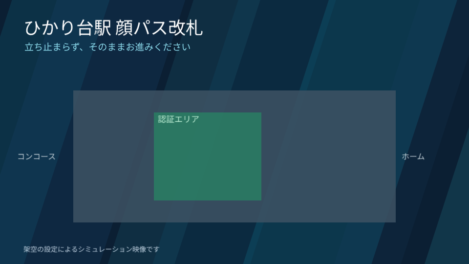

13 ツールの実演
画像、音声、動画はすべて CLI の実出力です。掲載したコマンドは、終了コード 0 で成功したものだけです。作業フォルダは build/ で、長いコマンドは途中を省略して表示しています。コピーすると全文を取得できます。
企画の工程 / プレゼンテーション
DeckCraft
v0.16.0
コマンド 331
何ができるか
スライドを作成し、PowerPoint 形式、PDF、画像に書き出します。図形、画像、テーマフォントもコマンドで指定できます。 PowerPoint に近い位置づけのツールです。
この案件で作ったもの
導入提案のスライド 4 枚。システム構成図は図形コマンドで描き、最後のスライドに PhotoCraft の画像を貼りました。
対応形式
読み: .deckcraft / .pptx 書き: .deckcraft / .pptx / .pdf / .md / .png / .jpg / .gif
補足 座標は 960×540 pt です。日本語を揃えるには design.fonts でテーマフォントを指定します。


実際に実行したコマンド
deckcraft-cli run --cmd 'design.fonts={"major":"Noto Sans JP","minor":"Noto Sans JP"}' --cmd 'slide.new={"layout":"title","title":"TOORU 顔認証改札","body":"あさなぎ線 ひかり台駅 実証実験のご提案(架空)"}' … ほか 14 個の --cmd … --save deck/proposal.deckcraftdeckcraft-cli convert deck/proposal.deckcraft deck/proposal.pptxdeckcraft-cli convert deck/proposal.deckcraft deck/proposal.pdfdeckcraft-cli render deck/proposal.deckcraft --all --scale 1 deck/slides設計の工程 / 2D CAD
CADCraft
v0.18.0
コマンド 457
何ができるか
線、図形、寸法、画層をコマンドで作図し、DXF、DWG、PDF、PNG などに書き出します。AutoCAD 風の .scr スクリプトも使えます。 AutoCAD に近い位置づけのツールです。
この案件で作ったもの
改札の断面図と平面図。天井高 3,000 mm、ディスプレイ下端 2,200 mm、有効距離 2,000〜4,000 mm を寸法線で示しました。
対応形式
読み: dxf / dwg / svg / svgz 書き: dxf / dwg / dwt / svg / png / pdf
補足 負の値から始まる --window は、--window=-3000,… のように = でつなぎます。

実際に実行したコマンド
cadcraft-cli run --metric --cmd 'layer.new {"name":"STRUCT","color":"white","lineweight":0.5}' --cmd 'layer.new {"name":"EQUIP","color":4,"lineweight":0.35}' … ほか 50 個の --cmd … --save cad/gate.dxfcadcraft-cli run cad/gate.dxf --export cad/gate.png --window=-3000,-6900,6800,3700cadcraft-cli convert cad/gate.dxf cad/gate.pdf設計の工程 / 表計算
GridCraft
v0.17.0
コマンド 385
何ができるか
セルの値、数式、書式、グラフをコマンドで作り、xlsx、CSV、HTML、PDF に変換します。数式だけを評価する eval も使えます。 Excel に近い位置づけのツールです。
この案件で作ったもの
距離別の認証試験表(架空データ)。成功率と有効距離内の平均は数式で計算し、折れ線グラフを付けました。
対応形式
入出力: xlsx / csv / tsv / json / html / pdf
制約 PDF に書き出すと日本語が空白になりました。Noto Sans JP を指定しても同じだったため、この表の見出しは英語です。
実際に実行したコマンド
gridcraft-cli run --script grid/trial.txt --out grid/trial.xlsx --print A3:E13gridcraft-cli convert grid/trial.xlsx grid/trial.pdf設計の工程 / UI デザイン
FigCraft
v0.16.0
コマンド 636
何ができるか
フレーム、図形、テキストを JSON スクリプトで配置し、PNG、SVG、PDF などに書き出します。Figma の REST API JSON や .sketch も読めます。 Figma に近い位置づけのツールです。
この案件で作ったもの
1920×1080 のディスプレイ画面レイアウト。タイトル、人型、注記の領域と、3 種類の判定の見え方を整理しました。
対応形式
読み: .figcraft / .json / .fig / .sketch / .svg / 画像 書き: png / jpg / svg / webp / pdf / fig

実際に実行したコマンド
figcraft-cli run fig/layout.json --out fig/layout.figcraftfigcraft-cli render fig/layout.figcraft --out fig/layout.png --scale 0.5figcraft-cli convert fig/layout.figcraft fig/layout.svg素材の工程 / ベクター描画
VectorCraft
v0.22.0
コマンド 933
何ができるか
パス、図形、文字をコマンドで描き、SVG、PDF、PNG などに書き出します。文字のアウトライン化もできます。 Illustrator に近い位置づけのツールです。
この案件で作ったもの
ロゴ、3 色の人型、OK/NG の印。カメラ視点の通路図は、シナリオと同じ投影式で座標を計算して描きました。
対応形式
読み: .vectorcraft / .svg / .pdf / .ai / .eps / .psd / .dxf など 書き: .svg / .pdf / .ai / .png / .dxf / .eps など
補足 paint.setFill は選択中の図形にも効きます。別の色で描くときは先に select.none を実行します。


実際に実行したコマンド
vectorcraft-cli run --commands vector/person-ok.jsonl --export vector/person-ok.png --export vector/person-ok.svg --scale 1vectorcraft-cli run --commands vector/logo.jsonl --export vector/logo.vectorcraft --export vector/logo.png --scale 2vectorcraft-cli convert vector/logo.vectorcraft vector/logo.svg --outline-textvectorcraft-cli run --commands vector/camera-view.jsonl --export vector/camera-view.png --scale 1素材の工程 / ラスター画像編集
PhotoCraft
v0.21.0
コマンド 993
何ができるか
レイヤー、フィルター、文字、調整レイヤーをコマンドで重ね、PNG、PSD、DDS などに保存します。フォルダ単位の一括処理もできます。 Photoshop に近い位置づけのツールです。
この案件で作ったもの
人型と印を合成した透過 PNG と、ぼかしとノイズを加えたカメラ映像風の画像。
対応形式
.pcraft / .psd / .png / .jpg / .tif / .webp / .exr / .tga / .dpx / .dds など


実際に実行したコマンド
photocraft-cli run --new '{"width":500,"height":1200,"background":"transparent","name":"person-ok"}' --cmd file.placeEmbedded --params '{"path":"D:/work/art-craft-test/build/vector/person-ok.png","center":[250,700],"scale":100,"fit":false,"sm…' --cmd layer.layerStyle.outerGlow --params '{"color":"#35D07F","opacity":70,"size":24,"spread":8}' … ほか 1 個の --cmd … --params '{"path":"D:/work/art-craft-test/build/vector/mark-ok.png","center":[250,105],"scale":95,"fit":false,"smart…' --out photo/person-ok.pngphotocraft-cli run D:/work/art-craft-test/build/vector/camera-view.png --cmd filter.blur.gaussianBlur --params '{"radius":1.6}' --cmd filter.noise.addNoise --params '{"amount":5,"distribution":"gaussian","monochromatic":true,"seed":7}' … ほか 3 個の --cmd … --params '{"path":"D:/work/art-craft-test/build/photo/person-ok.png","center":[753.5,832.97],"scale":54.929999999999…' --params '{"lut":"cool"}' --params '{"x":48,"y":72,"text":"CAM-01 3.33s 距離 2.82m シミュレーション","font":"Noto Sans JP","size":34,"color":"#FFFFFF"}' --out photo/camera-frame.png素材の工程 / 写真現像
LightCraft
v0.19.0
コマンド 389
何ができるか
写真の露出やシャドウなどをスライダー単位で調整し、JPEG、TIFF、AVIF などに書き出します。HDR やパノラマの合成もできます。 Lightroom に近い位置づけのツールです。
この案件で作ったもの
PhotoCraft の画像を暗い時間帯の映像に見立て、露出とシャドウの補正前後を比べました。
対応形式
書き: jpg / png / tif / webp / avif / jxl / psd / dng
補足 内蔵デモの写真は風景だったため、題材に合う PhotoCraft の画像を入力にしました。


実際に実行したコマンド
lightcraft-cli render photo/camera-frame.png -o light/before.jpg --set light.exposure=-1.8 --size 960lightcraft-cli render light/before.jpg -o light/after.jpg --set light.exposure=1.6 --set light.shadows=40 --size 960素材の工程 / オーディオ編集
SoundCraft
v0.18.0
コマンド 483
何ができるか
トラック、MIDI、プラグインをコマンドで組んでミックスダウンします。音声ファイルの変換や音量の正規化もできます。 Audition に近い位置づけのツールです。
この案件で作ったもの
認証 OK/NG の効果音。録音素材は使わず、内蔵シンセに MIDI ノートを入力して合成しました。
対応形式
読み: wav / aiff / flac / mp3 / ogg / m4a など 書き: wav / bwf / aiff / flac
補足 書き出しは mp3 に対応していないため、WAV のまま掲載しています。音の印象は耳では確認しておらず、ピークと長さの数値だけを確認しました。
実際に実行したコマンド
soundcraft-cli run --cmd 'track.new={"kind":"instrument","format":"stereo","name":"OK","instrument":"subtractive_synth"}' --cmd 'mix.insert={"track":1,"plugin":"plate_reverb","params":{"mix":22,"decay":0.8}}' … ほか 3 個の --cmd … --bounce sound/ok-raw.wav --start 0 --end 1.0soundcraft-cli run --cmd 'track.new={"kind":"instrument","format":"stereo","name":"NG","instrument":"subtractive_synth"}' --cmd 'mix.insert={"track":1,"plugin":"plate_reverb","params":{"mix":12,"decay":0.5}}' … ほか 3 個の --cmd … --bounce sound/ng-raw.wav --start 0 --end 1.0soundcraft-cli convert sound/ok-raw.wav sound/ok.wav --bit-depth 16 --normalize映像の工程 / モーショングラフィックス
EffectCraft
v0.22.0
コマンド 760
何ができるか
コンポジションを JavaScript で組み立て、キーフレーム付きの映像をレンダリングします。テンプレートに値を流し込むこともできます。 After Effects に近い位置づけのツールです。
この案件で作ったもの
ディスプレイの背景動画 15 秒。流れる光の帯と駅名の表示を、1 本のスクリプトで作りました。
対応形式
書き: h264 / hevc / av1 / prores / webm / 連番画像 / gif / wav / aiff

実際に実行したコマンド
effectcraft-cli script ../scripts/display-bg.jsx --empty --save-as effect/bg.ecprojeffectcraft-cli render --project effect/bg.ecproj --comp display-bg --out effect/display-bg.mp4 --format h264 --bitrate 8000effectcraft-cli render-frame --project effect/bg.ecproj --comp display-bg --time 5 --out effect/display-bg.png --max-side 960映像の工程 / 動画編集
FilmCraft
v0.18.0
コマンド 717
何ができるか
シーケンスに素材を並べ、キーフレームや音を編集して書き出します。読み込みから書き出しまでスクリプトで実行できます。 Premiere に近い位置づけのツールです。
この案件で作ったもの
背景動画、人型、効果音を統合した完成動画。カメラ座標をそのままキーフレームにしました。完成動画はページ冒頭で再生できます。
対応形式
書き: h264 / hevc / prores / dnxhr / png / gif / wav / aac など


実際に実行したコマンド
filmcraft-cli --compact --save-as film/tooru.fcproj run film/1-import.jsonlfilmcraft-cli --compact --project film/tooru.fcproj --save run film/2-place.jsonlfilmcraft-cli --compact --project film/tooru.fcproj --save run film/3-keyframes.jsonlfilmcraft-cli --project film/tooru.fcproj export film/tooru-display.mp4 --format h264 --scale 0.5 --quality 70文書の工程 / ワープロ
WordCraft
v0.16.0
コマンド 656
何ができるか
Markdown などの原稿を docx や PDF に変換します。コマンドでの文書編集や、コメント付きの出力もできます。 Word に近い位置づけのツールです。
この案件で作ったもの
A4 の仕様書。Markdown の原稿から docx を作り、PDF に変換しました。
対応形式
docx / doc(読みのみ) / pdf / odt / rtf / html / md / tex / txt / json / png / xml
補足 --save を 2 回指定すると docx しか保存されず、エラーも出ませんでした。ここでは変換を分けて実行しています。

実際に実行したコマンド
wordcraft-cli convert ../data/spec.md word/spec.docxwordcraft-cli convert word/spec.docx word/spec.pdfwordcraft-cli render word/spec.docx word/spec.png --page 1文書の工程 / DTP・ページレイアウト
DesignCraft
v0.18.0
コマンド 555
何ができるか
テキストフレーム、画像、カラースウォッチをコマンドで組版し、PNG や印刷用 PDF に書き出します。 InDesign に近い位置づけのツールです。
この案件で作ったもの
駅に掲示する A4 の利用案内チラシ。3 mm の塗り足しを付けて組版しました。
対応形式
書き: png / pdf / .designcraft など(PDF/X の検査機能つき)
制約 PDF/X-4 の検査は通っていません。RGB の色と画像が残っているため、印刷入稿には CMYK への変換が必要です。

実際に実行したコマンド
designcraft-cli run --cmd 'file.new={"preset":"A4","title":"TOORU 利用案内","margins":36,"bleed":9,"primaryTextFrame":false}' --cmd 'swatch.create={"name":"Navy","color":"#0F2A44"}' … ほか 41 個の --cmd … --scale 1.4 --export design/flyer.png --export design/flyer.pdf --export design/flyer.designcraft文書の工程 / PDF 編集
PdfCraft
v0.19.0
ツール 195
何ができるか
PDF の結合、抽出、分割、文書情報の編集、テキスト抽出、偽の墨消しの検査などを行います。 Acrobat に近い位置づけのツールです。
この案件で作ったもの
仕様書、図面、試験表、チラシを 1 冊に結合した 4 ページの PDF。文書情報を書き込み、墨消しの検査も実行しました。
対応形式
読み書き: pdf ページの書き出し: png / jpg / tif


実際に実行したコマンド
pdfcraft-cli render grid/trial.pdf --page 1 --dpi 110 --out grid/trial.pngpdfcraft-cli combine word/spec.pdf cad/gate.pdf grid/trial.pdf design/flyer.pdf --out pdf/bundle-raw.pdfpdfcraft-cli edit pdf/bundle-raw.pdf --out pdf/tooru-bundle.pdf --title 'TOORU documents (fictional)' --author 'ArtCraft CLI demo'pdfcraft-cli info pdf/tooru-bundle.pdf